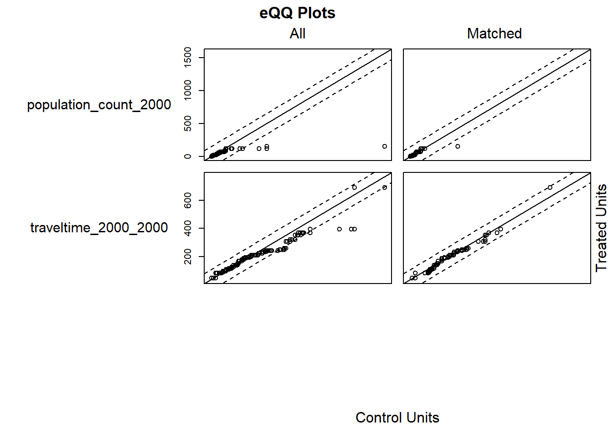
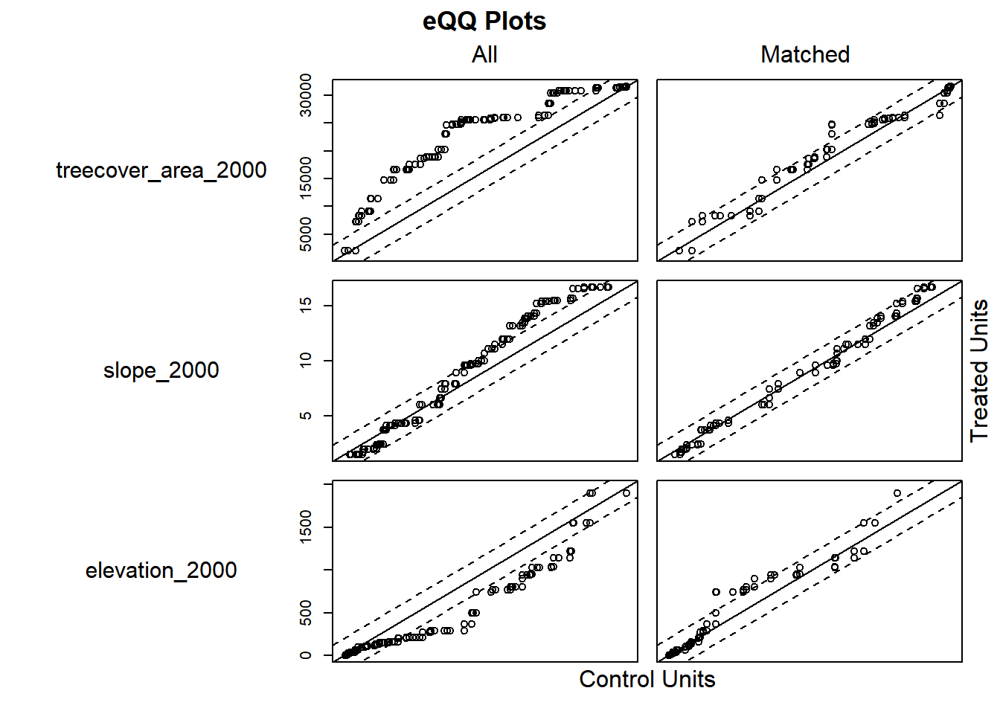
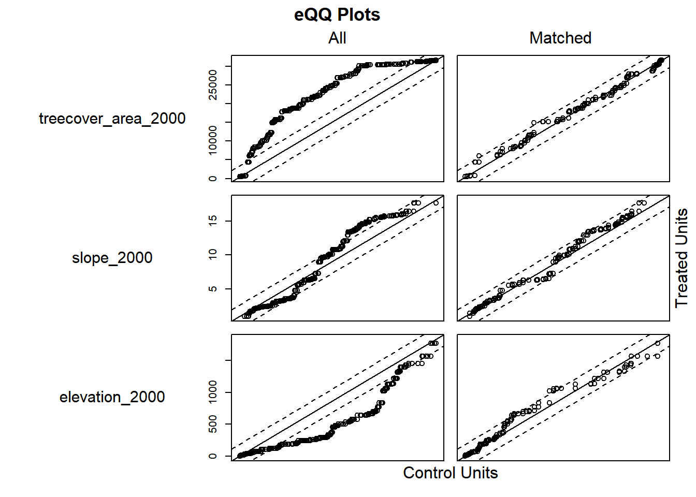
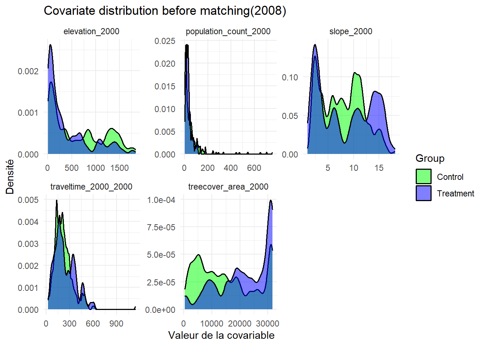
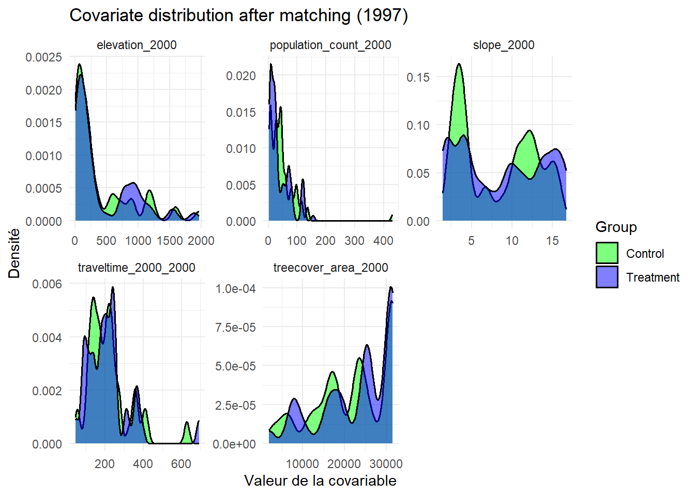
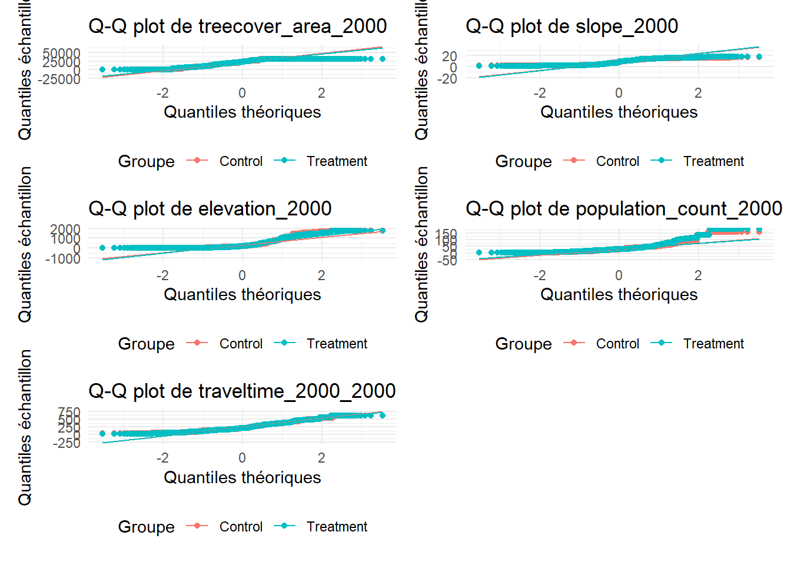
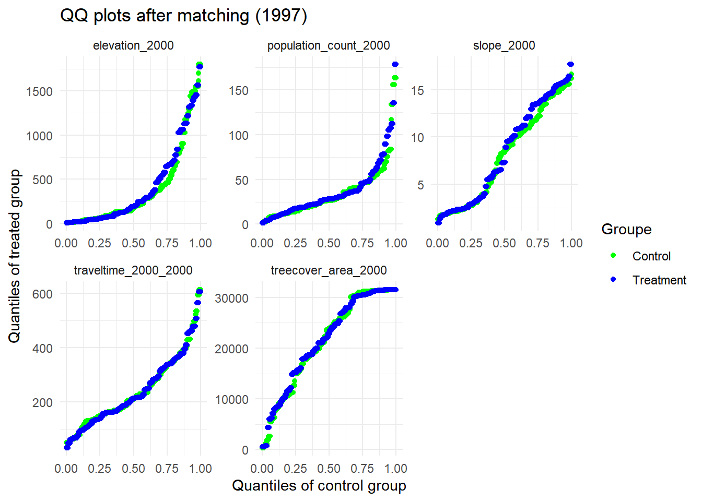
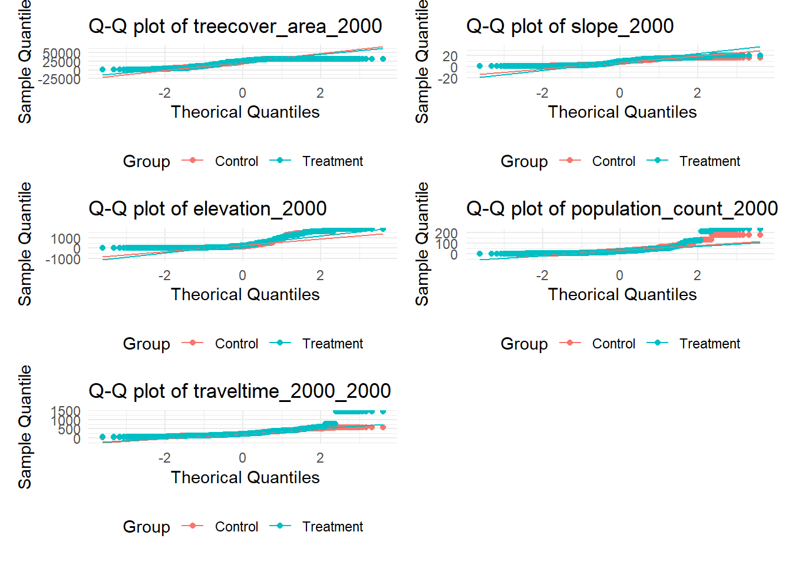

Le document illustre l’application de la méthode de matching dans l’analyse. L’objectif de cette méthode est d’équilibrer les échantillons, c’est-à-dire de maximiser la comparabilité entre les groupes de traitement et de contrôle en termes de caractéristiques observables (Ho et al. 2007). En effet, si les deux groupes sont très différents avant le traitement, il est difficile de savoir si les différences observées après viennent du traitement ou simplement de ces différences initiales. D’où l’importance du matching, qui permet de neutraliser ces différences. Plus précisement, nous utilisons le genetic matching, une variante des méthodes de matching. Bien qu’ayant le même objectif, cette approche repose sur des algorithmes d’optimisation qui ajustent les facteurs de confusion susceptibles d’influencer à la fois la probabilité de recevoir le traitement et les résultats observés.
8.2 Méthodes
Nous réalisons le matching à l’aide de la méthode genetic matching, en utilisant la fonction GenMatch() du package R MatchIt. Cette méthode combine les variables de matching en une seule mesure unique de distance “Mahalanobis distance matching”. Cette distance mesurera la différence entre les unités des groupes appariés pour quantifier la similitude entre les deux groupes d’observations, tout en tenant compte des corrélations entre les covariables et de leurs covariances (Diamond and Sekhon 2013).
Dans un premier temps, nous appliquons la fonction GenMatch() pour identifier la combinaison optimale de poids attribués à chaque covariable, dans le but de maximiser l’équilibre entre le groupe de traitement et de contrôle. Nous obtenons une matrice de poids mais aucune paire n’est encore formée. Dans un second temps, nous utilisons la fonction matchIt(), en intégrant la pondération trouvée auparavant, afin de constituer les paires entre les unités traitées et non traitées.
8.3 Matching for 1997
Code
# Library library(tidyverse) #Manipulation et visualisation des donnéeslibrary(sf) #Analyse des données spatialeslibrary(tmap) #Analyse cartographiquelibrary(MatchIt) #Matchinglibrary(ggplot2) #Figurelibrary(rbounds)library(rgenoud)library(Matching)# Load data hr_1997_final <-readRDS("data/derived/hr_1997_final.rds")# Matching variables matching_variables <-c("treecover_area_2000", "slope_2000", "elevation_2000", "population_count_2000", "traveltime_2000_2000")# Specifying binary variables in the column GROUPmatching_1997 <- hr_1997_final %>%filter(GROUP %in%c("Treatment", "Control")) %>%mutate(treatment =if_else(GROUP =="Treatment", 1, 0)) %>%drop_na(all_of(matching_variables))# Generate a matrix for GenMatch X_match <-as.data.frame(st_drop_geometry(matching_1997[, c("treecover_area_2000", "slope_2000", "elevation_2000", "population_count_2000", "traveltime_2000_2000")]))# Optimum combination search for 1997set.seed(123)if (file.exists("data/derived/gen_match_model_1997.rds")) { matching_result_1997 <-readRDS("data/derived/gen_match_model_1997.rds")} else {cat("Fichier introuvable, début du traitement...\n") gen_match_model_1997 <-GenMatch(Tr = matching_1997$treatment,X = X_match,BalanceMatrix = X_match,estimand ="ATT",M =1, # 1 appariement pour chaque unité du groupe de traitementweights =NULL,pop.size =1000, max.generations =100,wait.generations =4, caliper = .25,print.level =1,cluster =rep("localhost", 4) ) # 15 min saveRDS(gen_match_model_1997, "data/derived/gen_match_model_1997.rds")cat("Modèle GenMatch enregistré. \n")}# Matching with MatchIt for 1997 if (file.exists("data/derived/matching_result_1997.rds")) { matching_result_1997 <-readRDS("data/derived/matching_result_1997.rds")} else {cat("Fichier introuvable, début du traitement...\n") matching_result_1997 <-matchit( treatment ~ treecover_area_2000 + slope_2000 + elevation_2000 + population_count_2000 + traveltime_2000_2000,data = matching_1997,method ="genetic",distance ="mahalanobis",gen.match = gen_match_model_1997 )# RegistrementsaveRDS(matching_result_1997 , "data/derived/matching_result_1997.rds")cat("Données enregistrées")}# Summary of Balancesummary(matching_result_1997)
Call:
matchit(formula = treatment ~ treecover_area_2000 + slope_2000 +
elevation_2000 + population_count_2000 + traveltime_2000_2000,
data = matching_1997, method = "genetic", distance = "mahalanobis",
gen.match = gen_match_model_1997)
Summary of Balance for All Data:
Means Treated Means Control Std. Mean Diff. Var. Ratio
treecover_area_2000 22875.7100 16932.5775 0.6904 0.7360
slope_2000 8.7315 7.7879 0.1823 1.7216
elevation_2000 419.1710 595.0998 -0.3648 0.7370
population_count_2000 38.3757 70.4098 -0.8863 0.0528
traveltime_2000_2000 211.3683 231.2499 -0.1713 0.6616
eCDF Mean eCDF Max
treecover_area_2000 0.1771 0.3291
slope_2000 0.0839 0.2284
elevation_2000 0.1064 0.2512
population_count_2000 0.0705 0.1522
traveltime_2000_2000 0.0459 0.1753
Summary of Balance for Matched Data:
Means Treated Means Control Std. Mean Diff. Var. Ratio
treecover_area_2000 22875.7100 21757.6330 0.1299 0.9798
slope_2000 8.7315 8.2119 0.1004 1.2567
elevation_2000 419.1710 405.8304 0.0277 0.9858
population_count_2000 38.3757 47.1580 -0.2430 0.4968
traveltime_2000_2000 211.3683 216.4945 -0.0442 1.1021
eCDF Mean eCDF Max Std. Pair Dist.
treecover_area_2000 0.0495 0.2176 0.3254
slope_2000 0.0565 0.1585 0.3068
elevation_2000 0.0324 0.1161 0.1635
population_count_2000 0.0685 0.2777 0.9487
traveltime_2000_2000 0.0322 0.1150 0.2763
Sample Sizes:
Control Treated
All 3505 965
Matched 965 965
Unmatched 2540 0
Discarded 0 0
Code
plot(matching_result_1997)

Code
# Extract matched data for 1997data_matched_1997 <-match.data(matching_result_1997)data_matched_1997 <- data_matched_1997 %>%filter(weights >0)nrow(data_matched_1997)
Avant le matching, nous comptons 3 505 observations pour l’année 1997. Après le matching, nous obtenons 1930 observations appariées (965 groupes de traitement et 965 groupes de contrôles).
8.4 Matching for 2008
Code
# Load data hr_2008_final <-readRDS("data/derived/hr_2008_final.rds")# Matching variables matching_variables <-c("treecover_area_2000", "slope_2000", "elevation_2000", "population_count_2000", "traveltime_2000_2000")# Specifying binary variables in the column GROUPmatching_2008 <- hr_2008_final %>%filter(GROUP %in%c("Treatment", "Control")) %>%mutate(treatment =if_else(GROUP =="Treatment", 1, 0)) %>%drop_na(all_of(matching_variables))# Generate a matrix for GenMatch X_match <-as.data.frame(st_drop_geometry(matching_2008[, c("treecover_area_2000", "slope_2000", "elevation_2000", "population_count_2000", "traveltime_2000_2000")]))# Optimum combination search for 2008set.seed(123)if (file.exists("data/derived/gen_match_model_2008.rds")) { matching_result_2008 <-readRDS("data/derived/gen_match_model_2008.rds")} else {cat("Fichier introuvable, début du traitement...\n") gen_match_model_2008 <-GenMatch(Tr = matching_2008$treatment,X = X_match,BalanceMatrix = X_match,estimand ="ATT",M =1, # 1 appariement pour chaque unité du groupe de traitementweights =NULL,pop.size =1000, max.generations =100,wait.generations =4, caliper = .25,print.level =1,cluster =rep("localhost", 4) ) # 16 min et 25s saveRDS(gen_match_model_2008, "data/derived/gen_match_model_2008.rds")cat("Modèle GenMatch enregistré. \n")}# Matching with MatchIt for 2008 if (file.exists("data/derived/matching_result_2008.rds")) { matching_result_2008 <-readRDS("data/derived/matching_result_2008.rds")} else {cat("Fichier introuvable, début du traitement...\n") matching_result_2008 <-matchit( treatment ~ treecover_area_2000 + slope_2000 + elevation_2000 + population_count_2000 + traveltime_2000_2000,data = matching_2008,method ="genetic",distance ="mahalanobis",gen.match = gen_match_model_2008 )# RegistrementsaveRDS(matching_result_2008 , "data/derived/matching_result_2008.rds")cat("Données enregistrées")}# Summary of Balancesummary(matching_result_2008)
Call:
matchit(formula = treatment ~ treecover_area_2000 + slope_2000 +
elevation_2000 + population_count_2000 + traveltime_2000_2000,
data = matching_2008, method = "genetic", distance = "mahalanobis",
gen.match = gen_match_model_2008)
Summary of Balance for All Data:
Means Treated Means Control Std. Mean Diff. Var. Ratio
treecover_area_2000 21508.4013 14930.9727 0.7126 0.8369
slope_2000 8.4246 7.7254 0.1337 1.6747
elevation_2000 403.6544 629.5812 -0.4913 0.6985
population_count_2000 36.6501 53.0440 -0.5221 0.1178
traveltime_2000_2000 240.2570 218.4456 0.1689 1.1659
eCDF Mean eCDF Max
treecover_area_2000 0.1846 0.3330
slope_2000 0.0832 0.2108
elevation_2000 0.1216 0.2300
population_count_2000 0.0772 0.1636
traveltime_2000_2000 0.0501 0.1535
Summary of Balance for Matched Data:
Means Treated Means Control Std. Mean Diff. Var. Ratio
treecover_area_2000 21508.4013 21175.8175 0.0360 0.9569
slope_2000 8.4246 8.2957 0.0247 1.1193
elevation_2000 403.6544 420.8498 -0.0374 0.8826
population_count_2000 36.6501 33.8006 0.0908 1.3192
traveltime_2000_2000 240.2570 238.0983 0.0167 1.0313
eCDF Mean eCDF Max Std. Pair Dist.
treecover_area_2000 0.0202 0.0889 0.1646
slope_2000 0.0202 0.0690 0.1491
elevation_2000 0.0258 0.1062 0.5733
population_count_2000 0.0371 0.0992 0.6548
traveltime_2000_2000 0.0150 0.0513 0.1634
Sample Sizes:
Control Treated
All 9307 2419
Matched 2419 2419
Unmatched 6888 0
Discarded 0 0
Code
plot(matching_result_2008)

Code
# Extract matched data for 2008data_matched_2008 <-match.data(matching_result_2008)data_matched_2008 <- data_matched_2008 %>%filter(weights >0)nrow(data_matched_2008)
Avant le matching pour l’année 2008, nous avons 9 307 groupes de contrôle et 2 419 groupes de traitement sur les 15 364 observations. Après le matching, 4 838 groupes sont appariés, avec un total de 13 405 observations.
8.5 Matching for 2021
Code
# Load data hr_2021_final <-readRDS("data/derived/hr_2021_final.rds")# Specifying binary variables in the column GROUPmatching_2021 <- hr_2021_final %>%filter(GROUP %in%c("Treatment", "Control")) %>%mutate(treatment =if_else(GROUP =="Treatment", 1, 0)) %>%drop_na(all_of(matching_variables))# Generate a matrix for GenMatch X_match <-as.data.frame(st_drop_geometry(matching_2021[, c("treecover_area_2000", "slope_2000", "elevation_2000", "population_count_2000", "traveltime_2000_2000")]))# Optimum combination search for 2021set.seed(123)if (file.exists("data/derived/matching_result_2021.rds")) { matching_result_2021 <-readRDS("data/derived/matching_result_2021.rds")} else {cat("Fichier introuvable, début du traitement...\n") gen_match_model_2021 <-GenMatch(Tr = matching_2021$treatment,X = X_match,BalanceMatrix = X_match,estimand ="ATT",M =1, # 1 appariement pour chaque unité du groupe de traitementweights =NULL,pop.size =1000, max.generations =100,wait.generations =4, caliper = .25,print.level =1,cluster =rep("localhost", 4) ) # 20 min saveRDS(gen_match_model_2021, "data/derived/gen_match_model_2021.rds")cat("Modèle GenMatch enregistré. \n")}# Matching with MatchIt for 2021 if (file.exists("data/derived/matching_result_2021.rds")) { matching_result_2021 <-readRDS("data/derived/matching_result_2021.rds")} else {cat("Fichier introuvable, début du traitement...\n") matching_result_2021 <-matchit( treatment ~ treecover_area_2000 + slope_2000 + elevation_2000 + population_count_2000 + traveltime_2000_2000,data = matching_2021,method ="genetic",distance ="mahalanobis",gen.match = gen_match_model_2021 )# RegistrementsaveRDS(matching_result_2021 , "data/derived/matching_result_2021.rds")cat("Données enregistrées")}# Summary of Balancesummary(matching_result_2021)
Call:
matchit(formula = treatment ~ treecover_area_2000 + slope_2000 +
elevation_2000 + population_count_2000 + traveltime_2000_2000,
data = matching_2021, method = "genetic", distance = "mahalanobis",
gen.match = gen_match_model_2021)
Summary of Balance for All Data:
Means Treated Means Control Std. Mean Diff. Var. Ratio
treecover_area_2000 22859.6816 14208.3255 0.9683 0.8703
slope_2000 8.9060 7.5957 0.2466 1.7628
elevation_2000 440.5513 635.5400 -0.4077 0.7934
population_count_2000 31.0751 52.0898 -0.5838 0.1145
traveltime_2000_2000 261.9419 218.8467 0.2574 2.6660
eCDF Mean eCDF Max
treecover_area_2000 0.2386 0.4457
slope_2000 0.0963 0.2334
elevation_2000 0.1041 0.2438
population_count_2000 0.0633 0.1633
traveltime_2000_2000 0.0639 0.1412
Summary of Balance for Matched Data:
Means Treated Means Control Std. Mean Diff. Var. Ratio
treecover_area_2000 22859.6816 21827.7943 0.1155 0.9753
slope_2000 8.9060 8.3215 0.1100 1.2917
elevation_2000 440.5513 396.3075 0.0925 0.9645
population_count_2000 31.0751 33.5668 -0.0692 1.4583
traveltime_2000_2000 261.9419 251.2441 0.0639 1.9191
eCDF Mean eCDF Max Std. Pair Dist.
treecover_area_2000 0.0345 0.1384 0.3112
slope_2000 0.0451 0.1366 0.2032
elevation_2000 0.0376 0.1375 0.5557
population_count_2000 0.0497 0.1264 0.5627
traveltime_2000_2000 0.0175 0.0531 0.2498
Sample Sizes:
Control Treated
All 10074 3331
Matched 3331 3331
Unmatched 6743 0
Discarded 0 0
Code
plot(matching_result_2021)


Code
# Extract matched data for 2021data_matched_2021 <-match.data(matching_result_2021)data_matched_2021 <- data_matched_2021 %>%filter(weights >0)nrow(data_matched_2021)
Avant le matching pour l’année 2021, nous avons 10 074 groupe de traitement et 3 331 groupe de contrôle sur 15 364 observations. Après le macthing, 6 662 groupes sont appariés, avec un total de 13 405 observations.
8.6 Checking covariate balance
Les modèles d’appariement reposent sur l’hypothèse que les distributions des covariables sont similaires entre les groupes de traitement et de contrôle, rendant cruciale l’évaluation de l’équilibre des covariables. La validité des estimations dépend directement de la qualité de cet équilibre, d’où l’importance de réaliser des tests pour le mesurer. On effectue donc un test d’équilibre des covariables en deux étapes: un test avant appariement et un test après appariement.
Pour effectuer le test avant l’appariement, on détermine les déséquilibres initiaux à partir du test de Standardized Mean Difference (SMD). Le SMD mesure l’écart entre les moyennes des covariables dans les groupes de traitement et les groupes de contrôle pour comparer l’équilibre relatif des variables mesurées dans des unités différentes:
Si |SMD| < 0.1, il existe un équilibre satisfaisant entre les groupes pour la covariable.
Si SMD > 0.1, le déséquilibre est significatif (Austin 2009). Pour réajuster l’équilibre, on augmentera l’intervalle des calipers afin d’obtenir un SMD ≤ 0.1.
Le test après appariement sera un test visuel de la qualité du matching en comparant la distribution de chaque covariable à partir d’un plot. La méthode graphique offre une vue d’ensemble de la distribution des covariables. Le graphique facilite ainsi l’identification des déséquilibres à différents niveaux de la distribution. Lorsque les points Q-Q plot se situent près de la diagonale, le quantile des deux distributions sont similaires, signalant ainsi un bon équilibre
8.6.1 Balance test for 1997
8.6.1.1 Balance test before matching
Code
library(halfmoon)library(cobalt)# Balance before matchingbal_before_1997 <-bal.tab( treatment ~ treecover_area_2000 + slope_2000 + elevation_2000 + population_count_2000 + traveltime_2000_2000,data = matching_1997,estimand ="ATT",un =TRUE# Inclusion des covariables non appariées )print(bal_before_1997)
Balance Measures
Type Diff.Un
treecover_area_2000 Contin. 0.6904
slope_2000 Contin. 0.1823
elevation_2000 Contin. -0.3648
population_count_2000 Contin. -0.8863
traveltime_2000_2000 Contin. -0.1713
Sample sizes
Control Treated
All 3505 965
Code
# Balance plot before matchingmatching_before_1997 <- matching_1997 %>%pivot_longer(cols =all_of(matching_variables),names_to ="variable",values_to ="value" )ggplot(matching_before_1997, aes(x = value, fill = GROUP)) +geom_mirror_histogram(alpha =0.5) +facet_wrap(~variable, scales ="free") +scale_fill_manual(values =c("Control"="green", "Treatment"="blue")) +labs(tittle ="Covariate Distribution before matching (1997)",x ="Valeur de la covariable",y ="Densité",fill ="Group" ) +theme_minimal()
8.6.1.2 Balance test after matching
Code
# Balance after matchingbal_after_1997 <-bal.tab(matching_result_1997)print(bal_after_1997)
# Balance plot after matchingmatched_data_1997 <-match.data(matching_result_1997)matching_after_1997 <- matched_data_1997 %>%pivot_longer(cols =all_of(matching_variables),names_to ="variable",values_to ="value")ggplot(matching_after_1997, aes(x = value, fill = GROUP)) +geom_density(alpha =0.5, color ="black", linewidth =0.7, adjust =0.7) +facet_wrap(~variable, scales ="free") +scale_fill_manual(values =c("Control"="green", "Treatment"="blue")) +labs(title ="Covariate distribution after matching (1997)",x ="Valeur de la covariable",y ="Densité",fill ="Group" ) +theme_minimal()

8.6.2 Balance test for 2008
8.6.2.1 Balance test before matching
Code
library(halfmoon)library(cobalt)# Balance before matchingbal_before_2008 <-bal.tab( treatment ~ treecover_area_2000 + slope_2000 + elevation_2000 + population_count_2000 + traveltime_2000_2000,data = matching_2008,estimand ="ATT",un =TRUE# Inclusion des covariables non appariées )print(bal_before_2008)
Balance Measures
Type Diff.Un
treecover_area_2000 Contin. 0.7126
slope_2000 Contin. 0.1337
elevation_2000 Contin. -0.4913
population_count_2000 Contin. -0.5221
traveltime_2000_2000 Contin. 0.1689
Sample sizes
Control Treated
All 9307 2419
Code
# Balance plot before matchingmatching_before_2008 <- matching_2008 %>%pivot_longer(cols =all_of(matching_variables),names_to ="variable",values_to ="value" )ggplot(matching_before_2008, aes(x = value, fill = GROUP)) +geom_mirror_histogram(alpha =0.5) +facet_wrap(~variable, scales ="free") +scale_fill_manual(values =c("Control"="green", "Treatment"="blue")) +labs(tittle ="Covariate Distribution before matching (2008)",x ="Valeur de la covariable",y ="Densité",fill ="Group" ) +theme_minimal()
Les résultats montrent que la valeur de la différence standardisée des moyennes entre les groupes traités et contrôles, calculées avant le matching est supérieur à 0.1, qui indique un déséquilibre significatif . Seule la variable slope_2000 a un équilibre modérée avec une valeur de SMD égale à 0.1337. Sans l’appariement, les données brutes montrent des déséquilibres importants entre les groupes pour plusieurs covariables. D’où la nécessité de réaliser un appariement pour réduire ces différences et obtenir des groupes plus comparables pour l’analyse de l’effet du traitement.
8.6.2.2 Balance test after matching
Code
# Balance after matchingbal_after_2008 <-bal.tab(matching_result_2008)print(bal_after_2008)
# Balance plot after matchingmatched_data_2008 <-match.data(matching_result_2008)matching_after_2008 <- matched_data_2008 %>%pivot_longer(cols =all_of(matching_variables),names_to ="variable",values_to ="value")ggplot(matching_after_2008, aes(x = value, fill = GROUP)) +geom_density(alpha =0.5, color ="black", linewidth =0.7, adjust =0.7) +facet_wrap(~variable, scales ="free") +scale_fill_manual(values =c("Control"="green", "Treatment"="blue")) +labs(title ="Covariate distribution after matching (2008)",x ="Valeur de la covariable",y ="Densité",fill ="Group" ) +theme_minimal()
Après l’appariement, toutes les variables présentent un SMD très faible (en dessous du seuil de 0.1), qui signifie que les groupes de traitement et de contrôle sont désormais très similaires sur ces variables. Tous les individus traités ont été appariés à un contrôle.
8.6.2.3 Q-Q Plot analysis
Code
library(patchwork)plots_2008 <-lapply(matching_variables, function(var){ggplot(matched_data_2008, aes(sample = .data[[var]], color = GROUP)) +stat_qq() +stat_qq_line() +labs(title =paste("Q-Q plot de", var), x ="Quantiles théoriques", y ="Quantiles échantillon", color ="Groupe" ) +theme_minimal() +theme(legend.position ="bottom")})# Patchwork grid assemblywrap_plots(plots_2008, ncol =2)

Sur les graphiques, on peut voir qu’il y a des différences de forme entre les distributions comparées. Pour la majorité des covariables (treecover_area_2000, slope_2000, traveltime_2000), les distributions des groupes de contrôle et de traitement sont similaires, presque parfaite. Les points Q-Q plots sont proches de la diagonale montrant que le matching a bien équilibré ces variables. Quant aux covariables elevation_2000 , les courbes de distribution montrent quelques différences entre le groupe de traitement et de contrôle. Ces différences s’accentuent dans le cas de la covariable population_count_2000, qui se diffèrent beaucoup dans les extrêmes. Le matching a équilibré les covariables mais ce n’est pas totalement parfait.
8.6.3 Balance test for 2021
8.6.3.1 Balance test before matching
Code
# Balance before matchingbal_before_2021 <-bal.tab( treatment ~ treecover_area_2000 + slope_2000 + elevation_2000 + population_count_2000 + traveltime_2000_2000,data = matching_2021,estimand ="ATT",un =TRUE# Inclusion des covariables non appariées )print(bal_before_2021)
Balance Measures
Type Diff.Un
treecover_area_2000 Contin. 0.9683
slope_2000 Contin. 0.2466
elevation_2000 Contin. -0.4077
population_count_2000 Contin. -0.5838
traveltime_2000_2000 Contin. 0.2574
Sample sizes
Control Treated
All 10074 3331
Code
# Balance plot before matchingmatching_before_2021 <- matching_2021 %>%pivot_longer(cols =all_of(matching_variables),names_to ="variable",values_to ="value" )ggplot(matching_before_2021, aes(x = value, fill = GROUP)) +geom_mirror_histogram(alpha =0.5) +facet_wrap(~variable, scales ="free") +scale_fill_manual(values =c("Control"="green", "Treatment"="blue")) +labs(tittle ="Covariate Distribution before matching (2021)",x ="Covariate value",y ="Density",fill ="Group" ) +theme_minimal()

Les résultats montrent qu’il y a une différence entre les groupes de traitement et les groupes de contrôle pour chaque covariable avant l’appariement. Tous les covariables présentes des déséquilibres modérés entre les groupes, sauf pour la variable population_count_2000 qui montre un déséquilibre majeur.
8.6.3.2 Balance test after matching
Code
# Balance after matchingbal_after_2021 <-bal.tab(matching_result_2021)print(bal_after_2021)
# Balance plot after matchingmatched_data_2021 <-match.data(matching_result_2021)matching_after_2021 <- matched_data_2021 %>%pivot_longer(cols =all_of(matching_variables),names_to ="variable",values_to ="value")ggplot(matching_after_2021, aes(x = value, fill = GROUP)) +geom_density(alpha =0.5, color ="black", linewidth =0.7, adjust =0.7) +facet_wrap(~variable, scales ="free") +scale_fill_manual(values =c("Control"="green", "Treatment"="blue")) +labs(title ="Covariate Distribution after matching (2021)",x ="Covariate value",y ="Density",fill ="Group" ) +theme_minimal()
Les résultats montrent que toutes les valeurs des SMD sont très faibles, comprises entre -0.0692 et 0.1155, indiquant ainsi un excellent équilibre entre les groupes pour l’ensemble des covariables. Les graphiques confirment également cet équilibre: les courbes des groupes de contrôle (en vert) et les groupes de traitement (en bleue) se superposent largement, traduisant une forte similitude dans la distribution des covariables après l’appariement.
8.6.3.3 Q-Q Plot analysis
Code
library(patchwork)plots_2021 <-lapply(matching_variables, function(var){ggplot(matched_data_2021, aes(sample = .data[[var]], color = GROUP)) +stat_qq() +stat_qq_line() +labs(title =paste("Q-Q plot of", var), x =" Theorical Quantiles", y ="Sample Quantile", color ="Group" ) +theme_minimal() +theme(legend.position ="bottom")})# Patchwork grid assemblywrap_plots(plots_2021, ncol =2)

Les distributions des groupes de contrôle et de traitement de treecover_area_2000, slope_2000, elevation_2000 et traveltime_2000_2000 sont presque similairement parfaite. Cela montre que le matching a bien équilibré ces variables. Dans le cas du population_count_2000, les courbes sont également très proches de la diagonale, mais présentent des petits écarts pour les valeurs extrêmes.
Austin, Peter C. 2009. “Balance Diagnostics for Comparing the Distribution of Baseline Covariates Between Treatment Groups in Propensity-Score Matched Samples.”Statistics in Medicine 28 (25): 30833107. https://doi.org/10.1002/sim.3697.
Diamond, Alexis, and Jasjeet S. Sekhon. 2013. “Genetic Matching for Estimating Causal Effects: A General Multivariate Matching Method for Achieving Balance in Observational Studies.”Review of Economics and Statistics 95 (3): 932945. https://doi.org/10.1162/REST_a_00318.
Ho, Daniel E., Kosuke Imai, Gary King, and Elizabeth A. Stuart. 2007. “Matching as Nonparametric Preprocessing for Reducing Model Dependence in Parametric Causal Inference.”Political Analysis 15 (3): 199236. https://doi.org/10.1093/pan/mpl013.